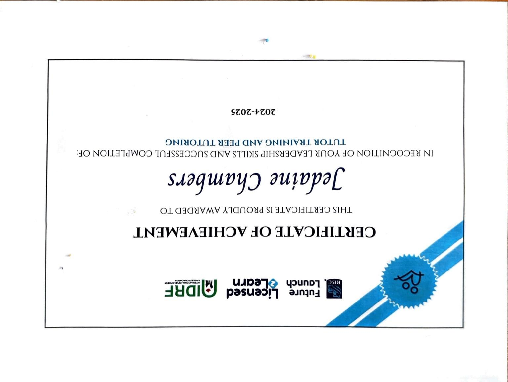

My Experience
Learning 2 Lead – Peer Tutoring Program
Throughout the Learning 2 Lead program, I tutored a Grade 9 student in English and worked one-on-one to help them succeed. Being a tutor taught me how to support others, be patient, and communicate in ways that build trust. I've officially completed my tutoring responsibilities and earned my L2L Certification as recognition for my leadership and commitment.
Arbo Seniors – Technology Support
Helping seniors with technology taught me to communicate clearly and with patience. It's a reminder that leadership means meeting people where they are.
Holland Bloorview – Volunteer
During my time at Holland Bloorview Kids Rehabilitation Hospital, I supported recreational activities and helped staff create a fun, welcoming environment. It was a space focused on healing and positivity, and I learned how to bring energy and compassion into a professional healthcare setting. The experience helped me grow in confidence, and showed me how impactful leadership can be even in quiet moments.